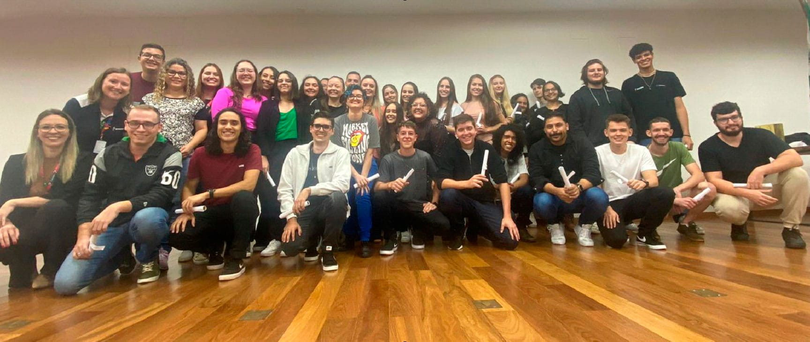

Ligas Acadêmicas
Muitas vivências acadêmicas são adquiridas fora da sala de aula, promovendo experiência interdisciplinar que constitui elementos fundamentais para a formação profissional.
As Ligas Acadêmicas criadas no âmbito da Faculdade Biopark são grupos de estudos que visam complementar a formação acadêmica, em uma área específica de um componente curricular, por meio de atividades que atendam os princípios do ensino, pesquisa e extensão.
As Ligas Acadêmicas são compostas por estudantes de graduação, supervisionadas por um professor orientador, visando desenvolver o protagonismo estudantil em uma área específica do conhecimento.
O que é Extensão
Um projeto de extensão é uma iniciativa acadêmica que visa conectar a universidade com a comunidade externa.
Liga de TI
Liga de Química
Monitoria
O programa de monitoria acadêmica da Faculdade Biopark consiste na realização de atividades didáticas pelo aluno, sob a supervisão do professor, permitindo uma vivência para a sua formação acadêmica. Esta atividade visa oportunizar ao discente monitor a experiência com o processo de ensino e aprendizagem, auxiliar os discentes na apreensão e produção do conhecimento, servir como ponto de articulação entre docentes e discentes, além de auxiliar na execução de atividades para melhoria do aprendizado.
Visa, ainda, proporcionar aos alunos oportunidade de aperfeiçoamento didático ou profissional que os oriente para o ingresso na carreira docente ou de pesquisador.
Clube de Ciências
O Clube de Ciências do Biopark Educação é um projeto lançado em 2018, com o propósito de integrar o conhecimento científico com momentos de diversão. Destinado a crianças e adolescentes de 04 a 17 anos, o Clube de Ciências opera em horário complementar ao escolar, oferecendo transporte gratuito e funcionando das 8h às 11h30min e das 14h às 17h30min.
Não há necessidade de conhecimentos prévios para participar, e o Clube é aberto a todas as crianças, sem a necessidade de processo seletivo. O objetivo é enaltecer a curiosidade, incitar o amor pela ciência e, por consequência, fomentar a produção científica.
As aulas proporcionam o contato com conteúdos nas áreas de Física, Química, Matemática, Biologia, Tecnologia e Robótica, sempre associados à cooperação, criatividade, inovação e pesquisa.